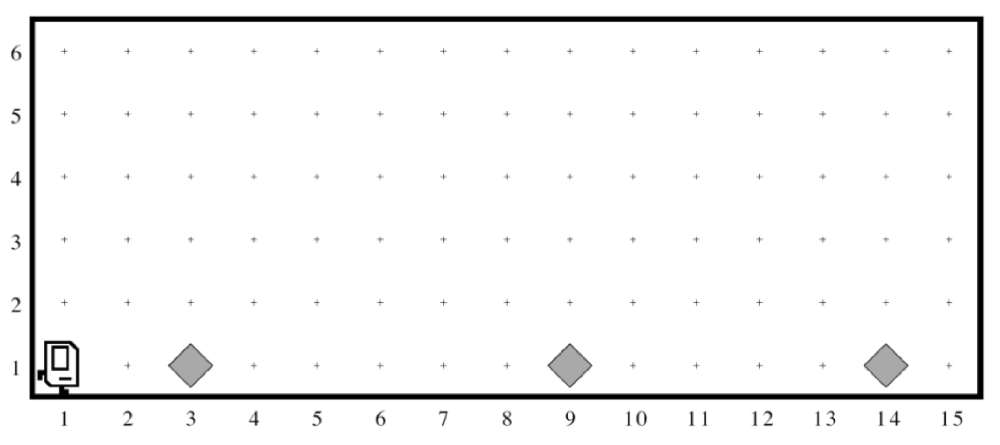
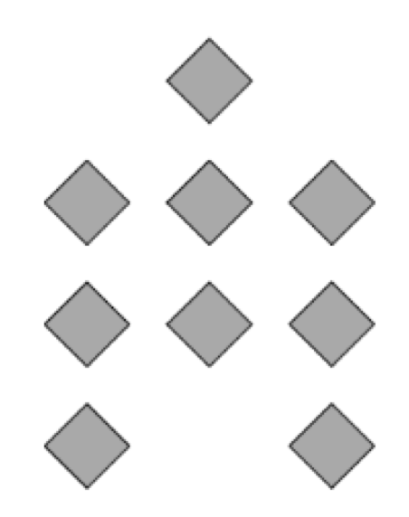
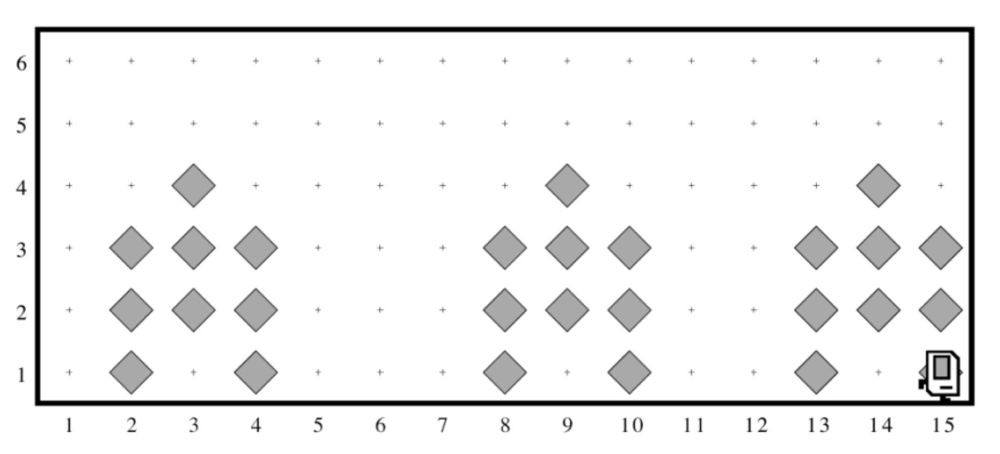
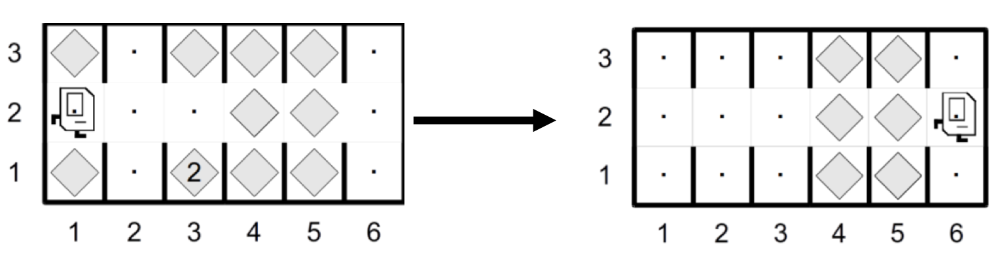

Section #1: Karel the Robot
April 12th, 2020
Based on handouts by Eric Roberts and Marty Stepp and converted to
Python by Brahm Capoor
This week in section, your first priority is to meet your section
leader and discover what sections in CS106A are all about. Your
section leader will therefore spend the first part of this week’s
session on introductions and telling you the things you need to know,
such as how to sign up for interactive grading. Afterwards, they will
move on to cover some of the important material from class in a
setting that is small enough for you to go over practice problems and
ask questions. This week, your goal is to solve Karel problems that
involve stepwise refinement, also known as top-down design.
Hospital Karel
Countries around the world are dispatching hospital-building robots to
make sure anyone who gets sick can be treated. They have decided to
enlist Karel robots. Your job is to program those robots.
Karel begins at the left end of a row that might look like this:

Each beeper in the figure represents a pile of supplies. Karel’s job
is to walk along the row and build a new hospital in the places marked
by each beeper. Each hospital should look exactly like this:

The new hospital should be centered at the point at which the bit of
debris was left, which means that the first hospital in the diagram
above will be constructed with its left edge along 2nd Avenue. At the
end of the run, Karel should be at the east end of the street having
created a set of hospitals that look like this for the initial
conditions shown:

Keep in mind the following information about the world:
-
Karel starts facing east at (1, 1) with an infinite number of
beepers in its beeper bag.
-
The beepers indicating the positions at which hospitals should be
built will be spaced so that there is room to build the hospitals
without overlapping or hitting walls.
-
You will not have to build a hospital that starts in either of the
last two columns.
-
Karel should not run into a wall if it builds a hospital that
extends into that final corner.
Write a program to implement the Hospital Building Karel project.
Remember that your program should work for any world that meets the
above conditions.
Karel Defends Democracy
The 2000 Presidential Elections were plagued by the hanging-chad
problem. To vote, voters punched columns out of a paper ballot; but if
they only punched partially, the column was left hanging. Luckily,
Karel is here to save the day!
In Karel’s world, a ballot consists of a series of columns that a
voter can “punch out”. Karel starts on the left of a ballot and should
progress through each column. If a column contains a beeper in the
center row, the voter did not intend to vote on that column,
and Karel should move to the next column. However, if a column
contains no beeper in the center row, Karel must make sure that
there is no hanging chad. In other words, Karel should check the
corners above and below and remove any beepers. A corner may contain
any number of beepers. Karel must finish facing east at the
rightmost edge of the ballot.
An example initial world is shown on the left below. The world on the
right below shows what Karel’s final world should look like (when
given the initial world on the left).

Keep in mind the following information about the world:
-
Karel starts facing east at (1, 2) with an infinite number of
beepers in its beeper bag.
-
Karel must end up facing east at the end of 2nd street
-
The world consists of an arbitrary number of 3-height columns only;
Karel can travel along the middle row without hitting a wall.
Your program should work for any world that meets the above
conditions.